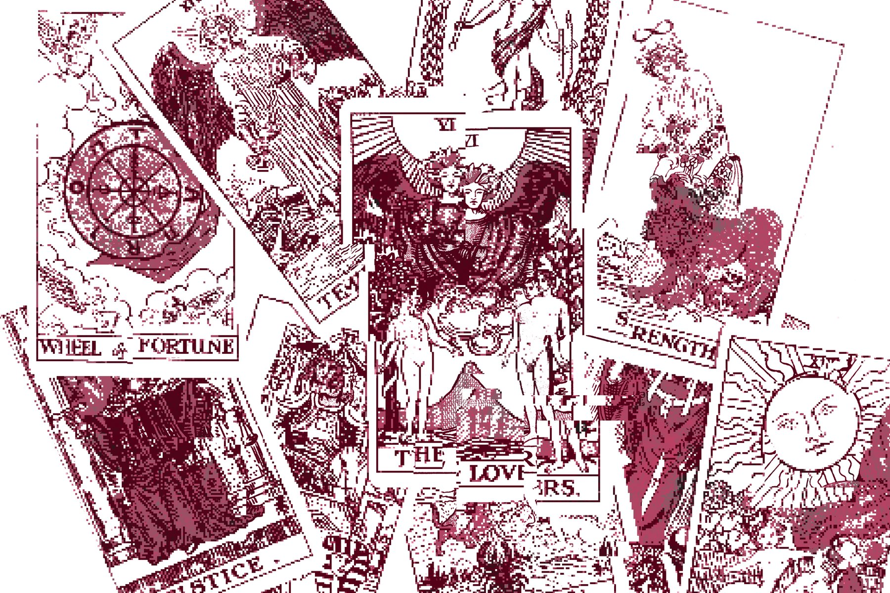
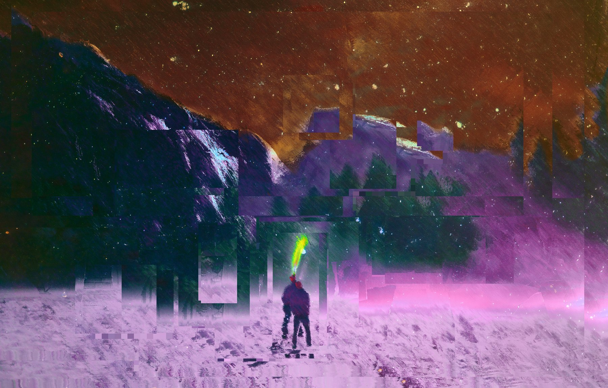

Post-campaign play / memory map
Threads
A reflective tabletop roleplaying game about returning to a retired character and asking: What did the world do when we stopped watching?

What next? / after the applause
The campaign ended, but the world did not.
Threads asks players to look back on old campaigns with affection, picking up on worlds where old characters have become history, and the places they change have kept changing in their wake.
Play moves over months, years, or decades, building vignettes from remembered people, unfinished promises, former enemies, and the gravity of a story that remembers your name.

Notes and minutes / unreliable archaeology
Consult the tome, consult yourself.
Notes can tell you what happened, but memory tells you what it meant. Threads lives in the gap between the facts and the story your heart kept telling after everyone went home.
Finished / solo or group / reflective play